M-Engage
Looking for a job comes with its fair share of problems, but when you’re a graduate student, balancing studies and finding
time to search for employment opportunities is strenuous. The problem is exacerbated by factors like
information overload, not feeling confident about your portfolio, resume and other application materials
especially because of highly diverse backgrounds of applicants. Even though ninety-eight percent
of all UMSI students find jobs or internship in their field of choice, almost all students find the
process very stressful. My goal for this project was to understand what makes the current process
frustrating for students and try to improve the experience of finding employment opportunities and
make it less taxing.
Design Process
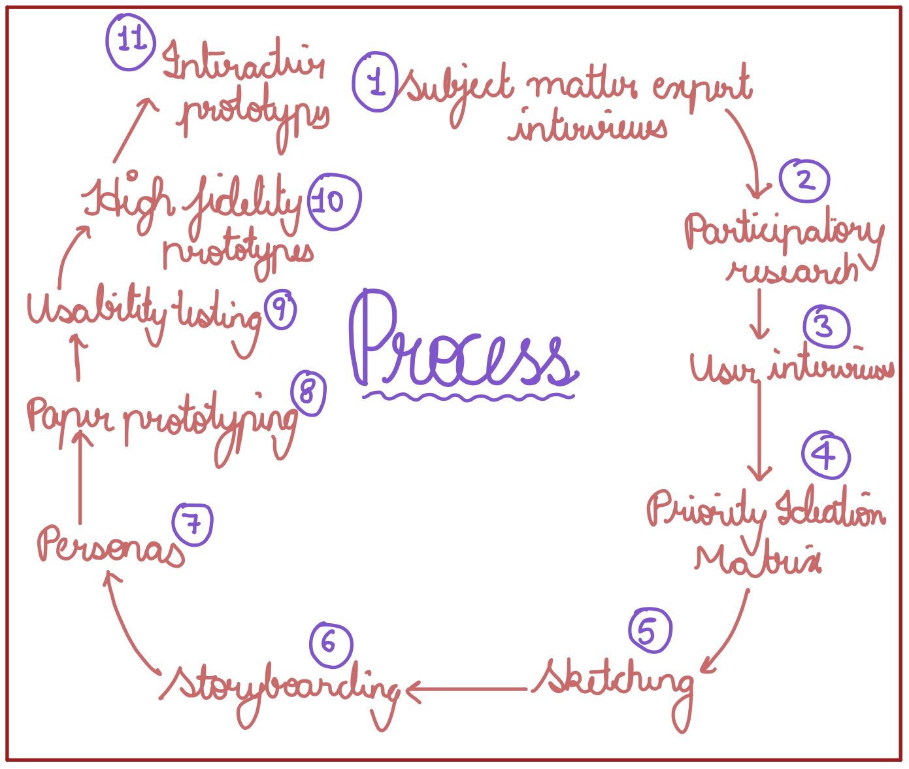
1. Subject Matter Expert Interviews (SME Interview)
I started my design process by interviewing staff at the Career Development Office (CDO) at
the University of Michigan as they are experts with a lot of experience, to discover the pain
points in the process of finding an internship. I conducted three such interviews with the CDO
director, CDO assistant director and the CDO Employer Relations Coordinator which led to deeper
understanding of the problem. All three employees expressed their concern for the mental wellbeing
of students. Other factors that came up across all interviews were:
-
Information overload : Students didn’t know where to start and indulged in over
analysis of information.
-
Mood disorders (Seasonal affective disorder) experienced by international students
who have never experienced the bleak winters in Ann Arbor.
-
Impostor syndrome : Due to the diverse population of MSI with varying experience,
a lot of the students who don’t have previous experience in the field thought they were
not good enough.
-
Rigorous coursework leading to conflicting priorities with respect to internship
searching process.
-
Networking : Even though networking is one of the best ways to land a job, students
didn’t know how to network or where to start.
2. Participatory Research
To validate my findings from the SME interviews, I employed a participatory research approach
and tried to understand the students’ perspective. Over 20 first-year MSI students participated
in my participatory design approach. I handed out small index cards to my participants after
giving them a small description of the problem statement. The participants then wrote about the
concerns they had with respect to the problem on one side of the index card and on the other
side wrote what solutions they thought would work for them.
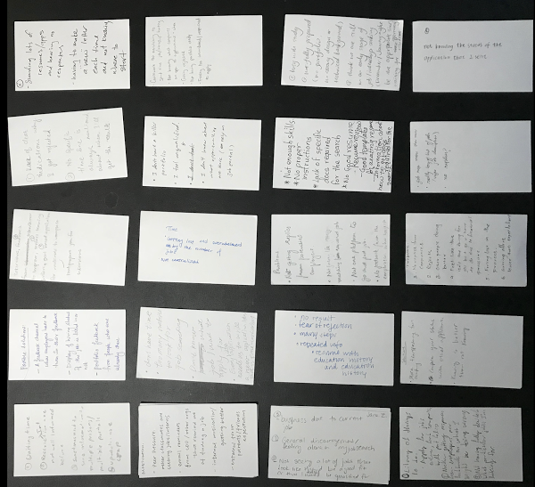
I found this approach very helpful as this was a quick way to reach out to a large number of
students. At the end of this phase, I was able to identify the problems that current students
had and compare them to the problems that the subject matter experts had identified. The key
issues that came up during my interaction with current MSI students is summarized in the infographic
below.
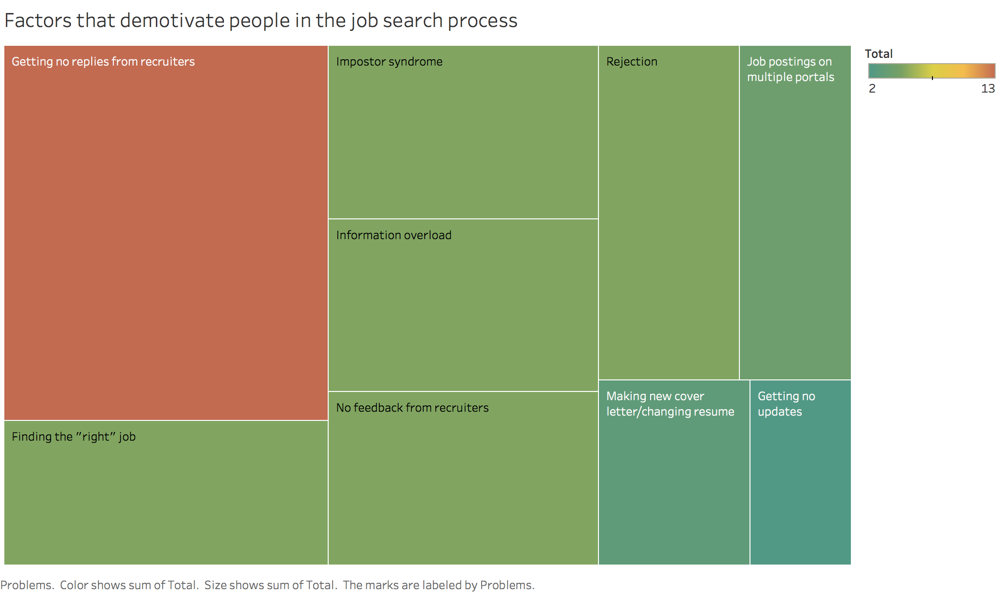
Issues of information overload came up in interviews with both the stakeholders and additionally, students expressed that
they didn’t know if they were a good fit for a job. An interesting insight that can be drawn
out of this data chart shown above is that students didn’t express any concern for their well-being.
The most demotivating factor according to the participants was “Getting no replies from recruiter”.
This refers to the fact that companies don’t send out a reply after the job application has been
submitted, and is a standard HR policy. Therefore, nothing can be done about this for the scope
of my project.
3. Ideation matrix, sketching ideas and storyboarding
After getting a feel of the problem, I used an ideation matrix to generate ideas and compare
potential solutions. To do so, I listed out the problems along one axis and potential solutions
across another. For every solution in the matrix, I checked off the problems it solved and at
the end, I had a matrix which looked like the one shown below.

I found this method very useful to compare solutions objectively and get ideas for sketching
solutions. I chose the top eight ideas from this matrix and sketched them out. Sketching these
ideas led me to better understand what use cases these solutions had and when they can be used.
Sketching led me to better understand what use cases each solution had.
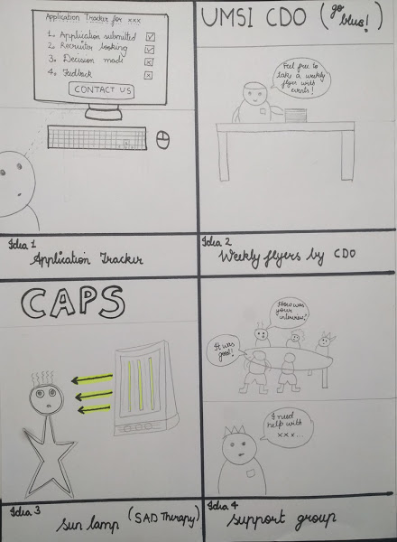
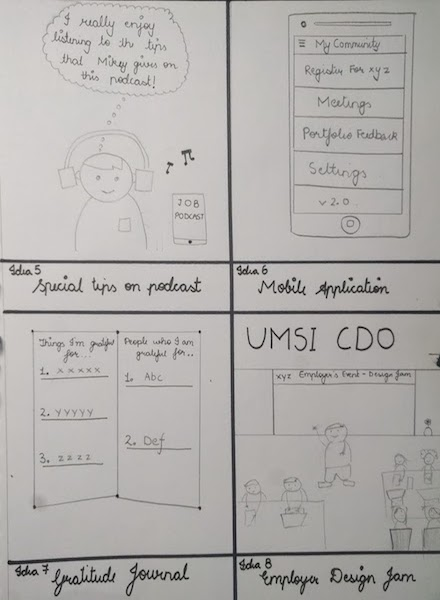
To augment these sketches and to get feedback on my ideas, I developed storyboards, so that
people who didn’t have context could understand what these solutions meant and given them example
of certain scenarios when these solutions can actually be used. The storyboards are shown below:
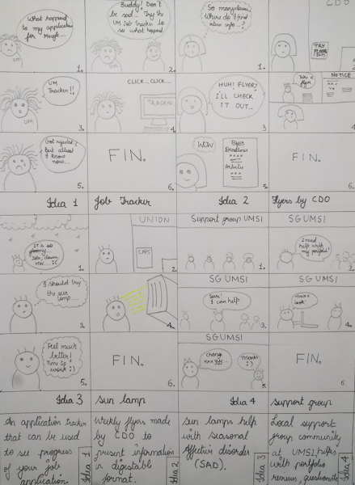
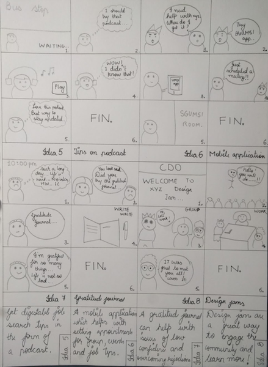
After finishing my sketches and storyboards, I went out and talked to my users again and asked
them what they thought about my potential solutions. Based on the feedback I gathered, I decided
to solve the problem of information overload and lack of a centralized community for resources
related to employment by creating an online discussion forum. My solution leverages the already
existing, strong UMSI (University of Michigan, School of Information) community and is a online
forum which facilitates discussion and provides various step by step guides to tackle the problem
of information overload head-on.The online community will engage the alumni, current MSI students
and the CDO staff in an effort to make life a little less stressful for the current MSI students
by leveraging the strong knowledge-base of alumni and CDO staff.
My solution leverages the already existing, strong UMSI community and is an online forum which facilitates discussion, and
provides various step by step guide to tackle the problem of information overload head-on.
The community also serves as an easy and non demanding medium for the alumni to give back to the community, as current initiatives
include spending considerable amount of time, e.g. peer coaching over video call.
4. Competitive analysis
The solution I was aiming for was an online community only for the UMSI community, therefore,
I compared products that were available to current students. There were several options, iTrack
for job postings, Canvas for discussion, the open MCommunity email discussion channel, however,
they all fell short of the addressing the needs of the users. iTrack has no option to facilitate
discussion or ask questions, I also found out that it has job postings from over a year ago which
means that it’s not updated to remove previous postings which leads to lack of reliability at
times. Canvas allows for students to ask questions and facilitates discussion but there is no
option to filter posts or see posts according to a ranking scheme.
Another direct competitor to my application was reddit which offers a lot of my intended features
however, it doesn’t have any way to control access only to UM community, and since, it is a feed
based system, finding guides (content that is static) would be difficult on it. Through this
analysis I decided that such content is best kept separate from the dynamic feed so that users
can easily access it. Competitive analysis helped me understand what features should be implemented
in the application and more importantly how to implement them as I learned about what works and
what does not across a spectrum of already existing solutions.
5. Personas
I developed four personas to make sure that I was actually designing for a real user base and
referred back to them to before implementing any new features. I found personas to be a very
useful artifact as I used them to prioritize implementing features for users. E.g. I chose to
implement FEED first over the podcast feature because the feed served all four personas while
the podcast only served two personas, only the first year students and second year students.
[Link to personas]
6. Paper prototypes
Before making paper prototypes, I finalized the things that will go in the application. The
main functionality of the application includes: a community only restricted to School of Information,
University of Michigan; a FEED which is a discussion forum where posts are tagged with different
categories; a GUIDE Section which has step by step instructions for students to start out their
internship finding process.
Feed:
This section of the application provides the members of the online community an opportunity to discuss questions, interact
with each other and critique portfolios/resumes. All posts on the FEED are tagged so that users
can filter posts according to their interests. These tags were created after understanding what
the users are interested in:
- Portfolio/Resume reviews: Posts where a student sends out a link to their portfolio/resume
and other members of the community can critique them.
-
Internship experiences: Posts where members talk about their past internship experiences so that others can learn more about
how the actual intern at the company looks like and hence, decide if it’s a good fit.
-
Job experience: Alumnis can post experiences related to their job which can help students looking for a job better know what
working at a particular company entails.
-
UX: Posts tagged UX are related to any User experience questions.
The posts can be upvotes/downvotes, shared and commented on. The different posts can also be
sorted by NEW(date of posting), or TOP (number of upvotes). You can additionally search for specific
posts by using the SEARCH bar.
CDO Guides:
This section of the application tries to solve the issue of information overload by creating step-by-step guide. The career
development office has a course called “Internship studio” in the winter term, which will help
the students in an finding internship. Using this course as a starting point, the office with
the help of students taking the class, can generate different condensed guides which are step
by step instructions for different facets related to internship search. Some of these guides
can be:
-
Starting your internship search
-
Creating a resume
-
Work-life balance
Access Control:
The online community would be restricted to only UMSI members so that members from outside the community don’t abuse and
spam the system. Additionally, restricting the community to UMSI would mean that the posts will
be more relevant to the user base. The application doesn’t require the users to sign in to start
using the application but only to sign in when the user chooses to interact: create new post,
comment, upvote, downvote, etc. I did this to the number of steps required for a user to engage
with the community.
After deciding on the features, I mapped out the user journey as follow :
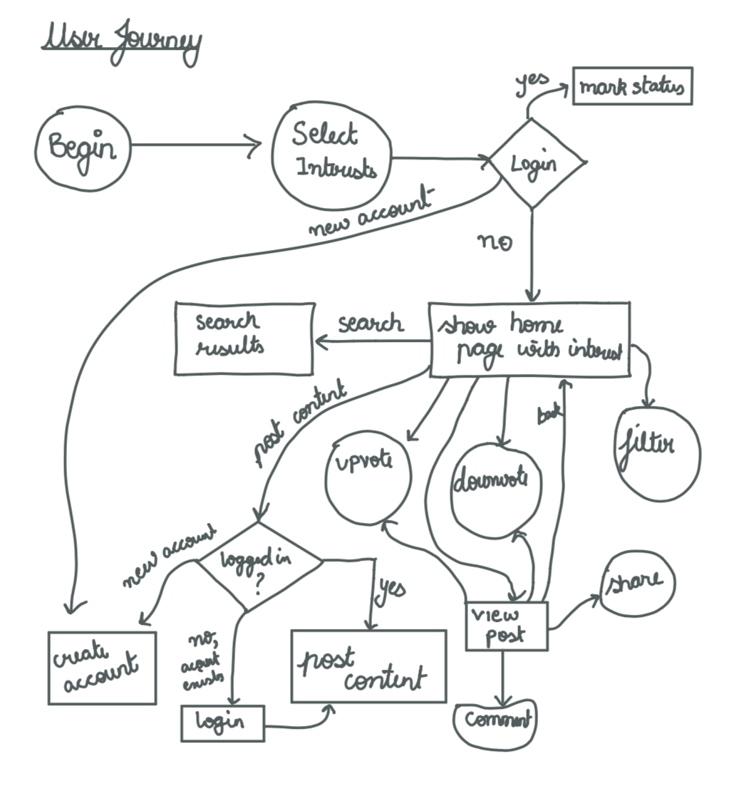
With an idea of functionality and information flow, I created paper prototypes for the application. Find the video documenting
these interactions below:
I used the low fidelity prototypes to test out different features and see how they were received
by the users. Low fidelity prototypes served as a useful tool to present ideas in a tangible
manner. I handed out my prototypes to different users and asked them to trying accomplishing
different tasks. I found this particularly useful as I could see where users were having difficulties
and which labels were difficult to understand for the users. Initially I had planned to keep
a single feed for all content in my application but based on feedback I received, I decided to
change it to separate feeds as people thought that it was not clear what GUIDEs meant. I also
tested out initially by placing buttons for sorting the feeds but based on feedback I got, people
thought it would be easier if tabs were used to navigate between the fields. I used the feedback
from the multiple users during the low-fidelity prototyping to make appropriate changes to my
final prototypes.
7. High fidelity prototypes
I used Sketch and inVision to create interactive prototypes. I created interactions for an android
application.
Design Rationale
All my design decisions were carefully thought out and had a reason for them. I performed a
design space analysis by using the technique of QOC : Questions,Options and Criteria. Given below
are some of the key design questions, with multiple possible options and the criteria for judging
them. Green lines refer to a positive correlation while the red lines map to a negative correlation.
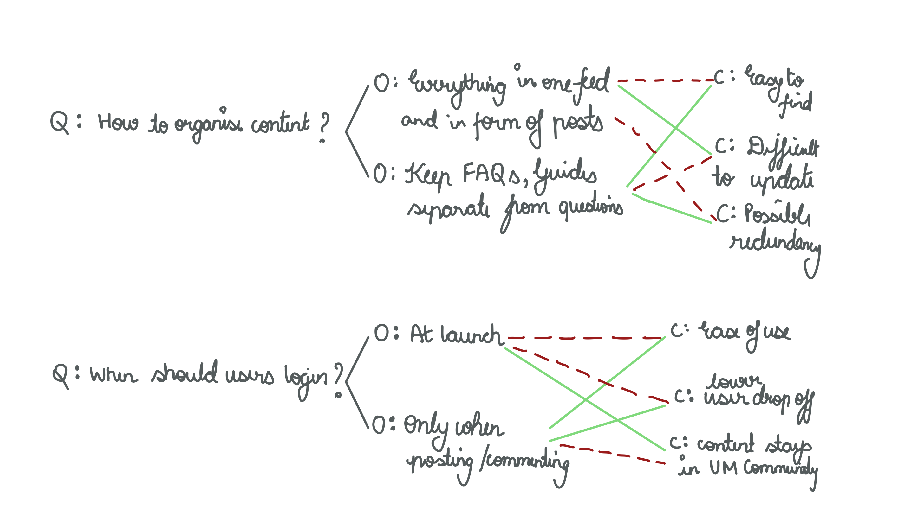
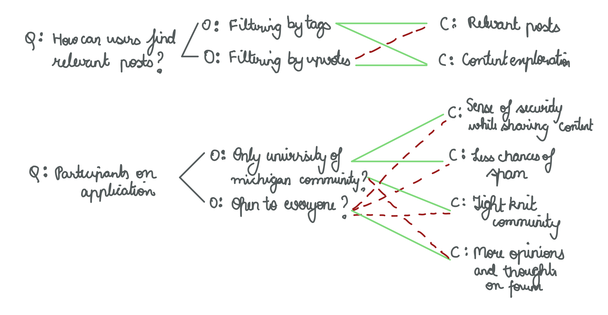
Reflection
Throughout my design process I employed a participatory approach and tried to include all my
stakeholders in the process. I frequently contacted users for conducting interviews, getting
feedback and usability tests. I found that interviewing subject matter experts was very useful.
The iterative approach that I followed allowed me to make better informed design decisions and
a product which users were comfortable using.
Throughout the process my main intention was keep my user in mind and design product which they would find useful. I placed
a lot of emphasis on the initial research before doing any other work because I wanted to
thoroughly understand my users.
I hope the platform that I envision to create will lead to stronger bonds in the UMSI community and bolster the connections
in this community!
Browse other projects
Looking for a job comes with its fair share of problems, but when you’re a graduate student, balancing studies and finding
time to search for employment opportunities is strenuous. The problem is exacerbated by factors like
information overload, not feeling confident about your portfolio, resume and other application materials
especially because of highly diverse backgrounds of applicants. Even though ninety-eight percent
of all UMSI students find jobs or internship in their field of choice, almost all students find the
process very stressful. My goal for this project was to understand what makes the current process
frustrating for students and try to improve the experience of finding employment opportunities and
make it less taxing.
Design Process
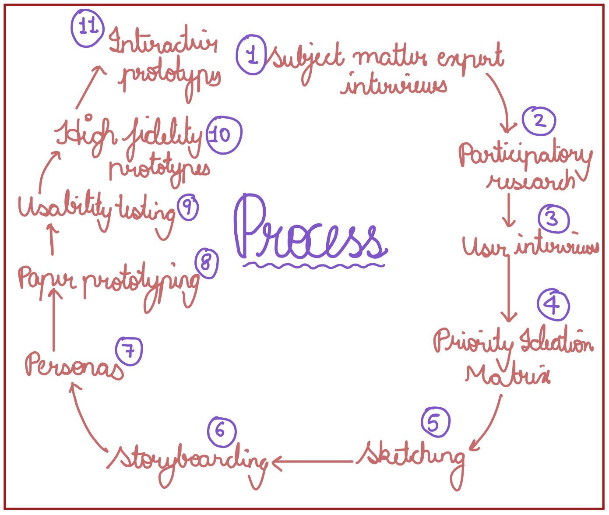
1. Subject Matter Expert Interviews (SME Interview)
I started my design process by interviewing staff at the Career Development Office (CDO) at the University of Michigan as they are experts with a lot of experience, to discover the pain points in the process of finding an internship. I conducted three such interviews with the CDO director, CDO assistant director and the CDO Employer Relations Coordinator which led to deeper understanding of the problem. All three employees expressed their concern for the mental wellbeing of students. Other factors that came up across all interviews were:
- Information overload : Students didn’t know where to start and indulged in over analysis of information.
- Mood disorders (Seasonal affective disorder) experienced by international students who have never experienced the bleak winters in Ann Arbor.
- Impostor syndrome : Due to the diverse population of MSI with varying experience, a lot of the students who don’t have previous experience in the field thought they were not good enough.
- Rigorous coursework leading to conflicting priorities with respect to internship searching process.
- Networking : Even though networking is one of the best ways to land a job, students didn’t know how to network or where to start.
2. Participatory Research
To validate my findings from the SME interviews, I employed a participatory research approach and tried to understand the students’ perspective. Over 20 first-year MSI students participated in my participatory design approach. I handed out small index cards to my participants after giving them a small description of the problem statement. The participants then wrote about the concerns they had with respect to the problem on one side of the index card and on the other side wrote what solutions they thought would work for them.
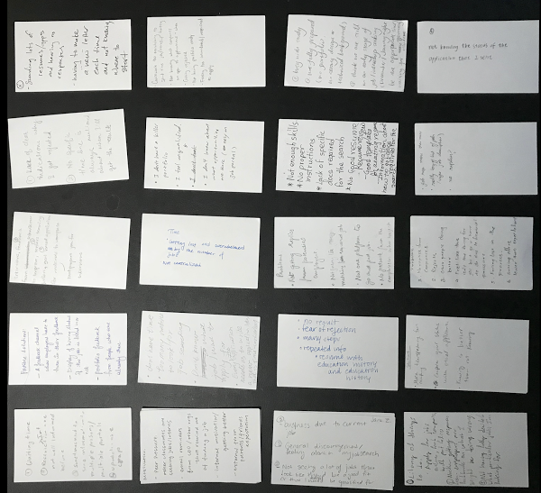
I found this approach very helpful as this was a quick way to reach out to a large number of students. At the end of this phase, I was able to identify the problems that current students had and compare them to the problems that the subject matter experts had identified. The key issues that came up during my interaction with current MSI students is summarized in the infographic below.
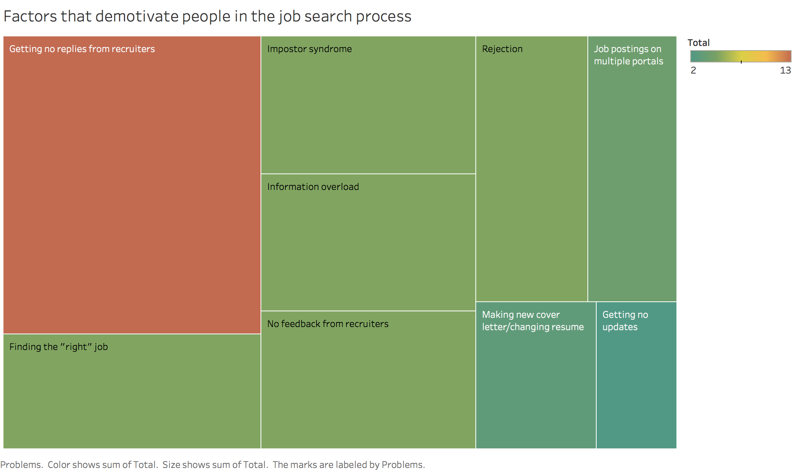
Issues of information overload came up in interviews with both the stakeholders and additionally, students expressed that they didn’t know if they were a good fit for a job. An interesting insight that can be drawn out of this data chart shown above is that students didn’t express any concern for their well-being.
The most demotivating factor according to the participants was “Getting no replies from recruiter”. This refers to the fact that companies don’t send out a reply after the job application has been submitted, and is a standard HR policy. Therefore, nothing can be done about this for the scope of my project.
3. Ideation matrix, sketching ideas and storyboarding
After getting a feel of the problem, I used an ideation matrix to generate ideas and compare potential solutions. To do so, I listed out the problems along one axis and potential solutions across another. For every solution in the matrix, I checked off the problems it solved and at the end, I had a matrix which looked like the one shown below.
I found this method very useful to compare solutions objectively and get ideas for sketching solutions. I chose the top eight ideas from this matrix and sketched them out. Sketching these ideas led me to better understand what use cases these solutions had and when they can be used.
Sketching led me to better understand what use cases each solution had.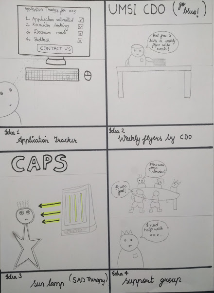 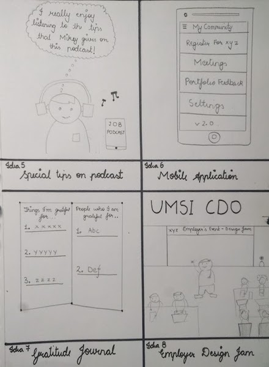
To augment these sketches and to get feedback on my ideas, I developed storyboards, so that people who didn’t have context could understand what these solutions meant and given them example of certain scenarios when these solutions can actually be used. The storyboards are shown below:
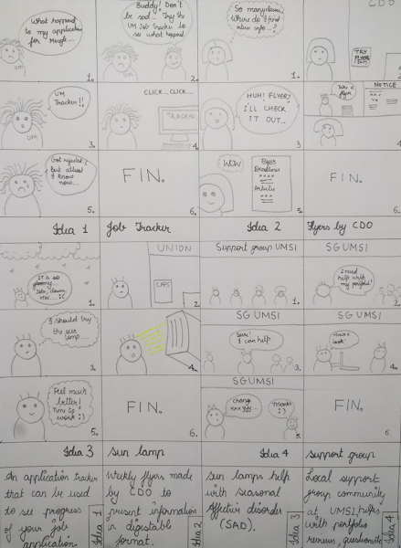 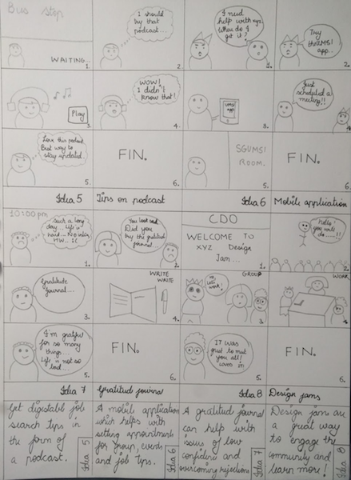
After finishing my sketches and storyboards, I went out and talked to my users again and asked them what they thought about my potential solutions. Based on the feedback I gathered, I decided to solve the problem of information overload and lack of a centralized community for resources related to employment by creating an online discussion forum. My solution leverages the already existing, strong UMSI (University of Michigan, School of Information) community and is a online forum which facilitates discussion and provides various step by step guides to tackle the problem of information overload head-on.The online community will engage the alumni, current MSI students and the CDO staff in an effort to make life a little less stressful for the current MSI students by leveraging the strong knowledge-base of alumni and CDO staff.
My solution leverages the already existing, strong UMSI community and is an online forum which facilitates discussion, and provides various step by step guide to tackle the problem of information overload head-on.The community also serves as an easy and non demanding medium for the alumni to give back to the community, as current initiatives include spending considerable amount of time, e.g. peer coaching over video call.
4. Competitive analysis
The solution I was aiming for was an online community only for the UMSI community, therefore, I compared products that were available to current students. There were several options, iTrack for job postings, Canvas for discussion, the open MCommunity email discussion channel, however, they all fell short of the addressing the needs of the users. iTrack has no option to facilitate discussion or ask questions, I also found out that it has job postings from over a year ago which means that it’s not updated to remove previous postings which leads to lack of reliability at times. Canvas allows for students to ask questions and facilitates discussion but there is no option to filter posts or see posts according to a ranking scheme.
Another direct competitor to my application was reddit which offers a lot of my intended features however, it doesn’t have any way to control access only to UM community, and since, it is a feed based system, finding guides (content that is static) would be difficult on it. Through this analysis I decided that such content is best kept separate from the dynamic feed so that users can easily access it. Competitive analysis helped me understand what features should be implemented in the application and more importantly how to implement them as I learned about what works and what does not across a spectrum of already existing solutions.
5. Personas
I developed four personas to make sure that I was actually designing for a real user base and referred back to them to before implementing any new features. I found personas to be a very useful artifact as I used them to prioritize implementing features for users. E.g. I chose to implement FEED first over the podcast feature because the feed served all four personas while the podcast only served two personas, only the first year students and second year students. [Link to personas]
6. Paper prototypes
Before making paper prototypes, I finalized the things that will go in the application. The main functionality of the application includes: a community only restricted to School of Information, University of Michigan; a FEED which is a discussion forum where posts are tagged with different categories; a GUIDE Section which has step by step instructions for students to start out their internship finding process.
Feed: This section of the application provides the members of the online community an opportunity to discuss questions, interact with each other and critique portfolios/resumes. All posts on the FEED are tagged so that users can filter posts according to their interests. These tags were created after understanding what the users are interested in:
- Portfolio/Resume reviews: Posts where a student sends out a link to their portfolio/resume and other members of the community can critique them.
- Internship experiences: Posts where members talk about their past internship experiences so that others can learn more about how the actual intern at the company looks like and hence, decide if it’s a good fit.
- Job experience: Alumnis can post experiences related to their job which can help students looking for a job better know what working at a particular company entails.
- UX: Posts tagged UX are related to any User experience questions.
The posts can be upvotes/downvotes, shared and commented on. The different posts can also be sorted by NEW(date of posting), or TOP (number of upvotes). You can additionally search for specific posts by using the SEARCH bar. CDO Guides: This section of the application tries to solve the issue of information overload by creating step-by-step guide. The career development office has a course called “Internship studio” in the winter term, which will help the students in an finding internship. Using this course as a starting point, the office with the help of students taking the class, can generate different condensed guides which are step by step instructions for different facets related to internship search. Some of these guides can be:
- Starting your internship search
- Creating a resume
- Work-life balance
Access Control: The online community would be restricted to only UMSI members so that members from outside the community don’t abuse and spam the system. Additionally, restricting the community to UMSI would mean that the posts will be more relevant to the user base. The application doesn’t require the users to sign in to start using the application but only to sign in when the user chooses to interact: create new post, comment, upvote, downvote, etc. I did this to the number of steps required for a user to engage with the community.
After deciding on the features, I mapped out the user journey as follow :
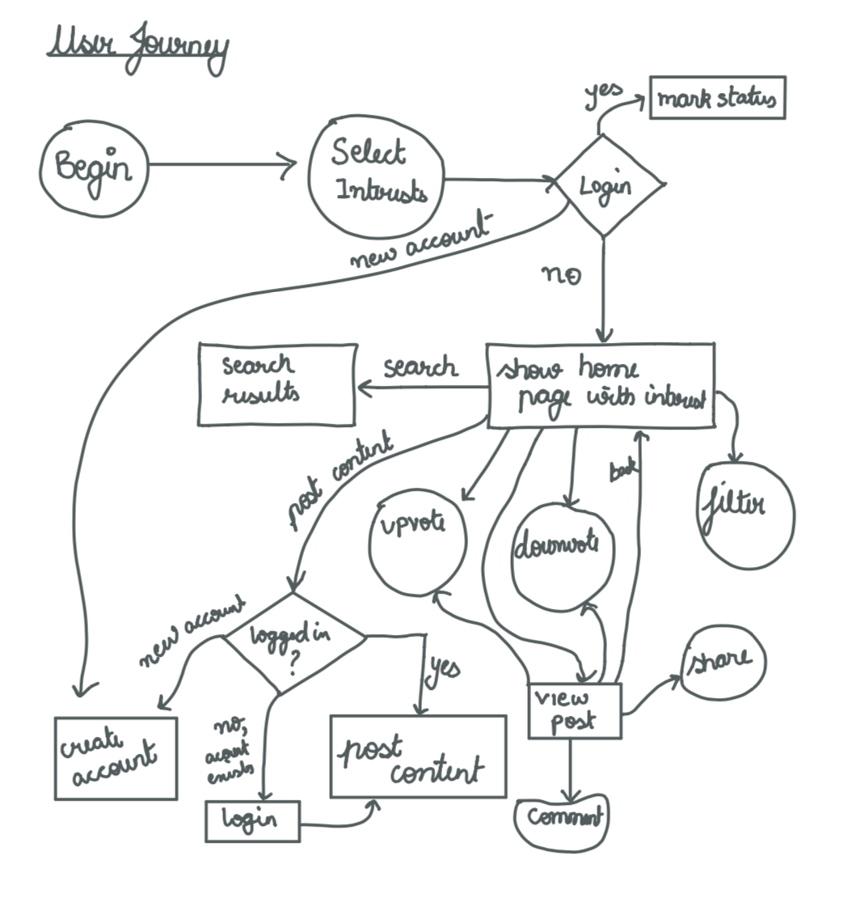
With an idea of functionality and information flow, I created paper prototypes for the application. Find the video documenting these interactions below:
I used the low fidelity prototypes to test out different features and see how they were received by the users. Low fidelity prototypes served as a useful tool to present ideas in a tangible manner. I handed out my prototypes to different users and asked them to trying accomplishing different tasks. I found this particularly useful as I could see where users were having difficulties and which labels were difficult to understand for the users. Initially I had planned to keep a single feed for all content in my application but based on feedback I received, I decided to change it to separate feeds as people thought that it was not clear what GUIDEs meant. I also tested out initially by placing buttons for sorting the feeds but based on feedback I got, people thought it would be easier if tabs were used to navigate between the fields. I used the feedback from the multiple users during the low-fidelity prototyping to make appropriate changes to my final prototypes.
7. High fidelity prototypes
I used Sketch and inVision to create interactive prototypes. I created interactions for an android application.
Design Rationale
All my design decisions were carefully thought out and had a reason for them. I performed a design space analysis by using the technique of QOC : Questions,Options and Criteria. Given below are some of the key design questions, with multiple possible options and the criteria for judging them. Green lines refer to a positive correlation while the red lines map to a negative correlation.
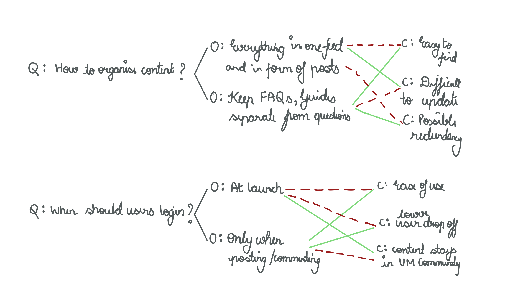 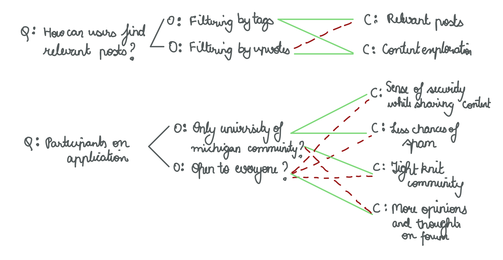
Reflection
Throughout my design process I employed a participatory approach and tried to include all my stakeholders in the process. I frequently contacted users for conducting interviews, getting feedback and usability tests. I found that interviewing subject matter experts was very useful. The iterative approach that I followed allowed me to make better informed design decisions and a product which users were comfortable using.
Throughout the process my main intention was keep my user in mind and design product which they would find useful. I placed a lot of emphasis on the initial research before doing any other work because I wanted to thoroughly understand my users.I hope the platform that I envision to create will lead to stronger bonds in the UMSI community and bolster the connections in this community!